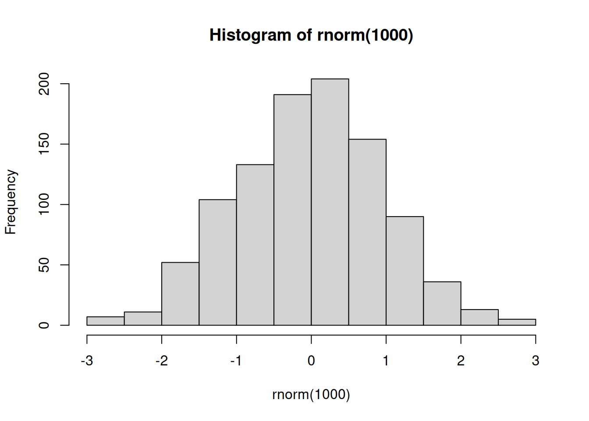

The syntax for doing interactive calculations in R is similar to other languages such as Python, MATLAB, and Julia, though some of the operators differ.
By default, RStudio shows output of code chunks in the code window pane (a notebook-style approach similar to Jupyter notebooks). To turn this off, go to Tools -> Global Options, select the R Markdown left tab and unclick “Show output inline for all R Markdown documents”.
Question
How do I calculate the cosine of 2 pi?
cosine(2pi)
cosine(2*pi)
cos(2 * pi)
cos(2 x pi)
cos(2*pi)
cos(2 * 3.14159)
cos[2*pi]
Note that exploring the results of running the code will also help to understand R’s error messages.
Answer
The function name is cos not cosine.
A function call specifies the arguments in parentheses (), not brackets [].
Spaces don’t generally matter (there are exceptions).
pi is an object in the R language.
Question
What happens if you do this (hitting enter/return after “pi”)?
cos(2*pi
Answer
Since we didn’t enter the closing parenthesis, R is waiting for additional input with the “continuation” prompt of +.
> cos(2*pi
+
You can either enter the missing syntax or hit Ctrl-C or Esc to kill the partial syntax and return to the usual prompt.
This happens often – with missing or non-matching closing parentheses/brackets or quotation symbols.
Assigning values to R objects
A key action in R (similar to other languages) is to store values in the form of R objects, and to examine the value of R objects.
R gives us a lot of flexibility (within certain rules) for assigning to (parts of) objects from (parts of) other objects. We’ll see this through the bootcamp.
Vectors in R
The most basic form of an R object is a vector (i.e., a 1-dimensional array). The various objects mySeq, years, country from above are all vectors.
In fact, individual (scalar) values are vectors of length one, so val and Val from above are also vectors.
We can concatenate values into a vector with c().
## numeric vectornums <-c(1.1, 3, -5.7)devs <-rnorm(5) # Five random normal values.devs
The last substitution uses “recycling” to match the left-hand-side extent (3 elements) with the right-hand-side extent (1 element)
Question
Suppose you have a vector, such vals <- rnorm(4). Which of these will work to extract a subset of a vector?
vals[3]
vals[2,3]
vals[c(2,3)]
vals(2,3)
vals[c(FALSE, TRUE, TRUE, FALSE)]
vals[c(f,t,t,f)]
vals(3)
Answer
Subsetting uses square brackets so answers #4 and #7 don’t work.
To create a set of indices to use in subsetting/slicing, you need to use c() to create a vector of indices, so answers #3 and #5 work.
Booleans in R use the canonical syntax of TRUE and FALSE, so answer #5 works but not answer #6.
Using functions in R
Functions generally take arguments, some of which are often optional:
log(10)
[1] 2.302585
log(10, base =10)
[1] 1
We can embed function calls:
hist(rnorm(1000))

A histogram
We can (usually) see the code of a function:
lm
function (formula, data, subset, weights, na.action, method = "qr",
model = TRUE, x = FALSE, y = FALSE, qr = TRUE, singular.ok = TRUE,
contrasts = NULL, offset, ...)
{
ret.x <- x
ret.y <- y
cl <- match.call()
mf <- match.call(expand.dots = FALSE)
m <- match(c("formula", "data", "subset", "weights", "na.action",
"offset"), names(mf), 0L)
mf <- mf[c(1L, m)]
mf$drop.unused.levels <- TRUE
mf[[1L]] <- quote(stats::model.frame)
mf <- eval(mf, parent.frame())
if (method == "model.frame")
return(mf)
else if (method != "qr")
warning(gettextf("method = '%s' is not supported. Using 'qr'",
method), domain = NA)
mt <- attr(mf, "terms")
y <- model.response(mf, "numeric")
w <- as.vector(model.weights(mf))
if (!is.null(w) && !is.numeric(w))
stop("'weights' must be a numeric vector")
offset <- model.offset(mf)
mlm <- is.matrix(y)
ny <- if (mlm)
nrow(y)
else length(y)
if (!is.null(offset)) {
if (!mlm)
offset <- as.vector(offset)
if (NROW(offset) != ny)
stop(gettextf("number of offsets is %d, should equal %d (number of observations)",
NROW(offset), ny), domain = NA)
}
if (is.empty.model(mt)) {
x <- NULL
z <- list(coefficients = if (mlm) matrix(NA_real_, 0,
ncol(y)) else numeric(), residuals = y, fitted.values = 0 *
y, weights = w, rank = 0L, df.residual = if (!is.null(w)) sum(w !=
0) else ny)
if (!is.null(offset)) {
z$fitted.values <- offset
z$residuals <- y - offset
}
}
else {
x <- model.matrix(mt, mf, contrasts)
z <- if (is.null(w))
lm.fit(x, y, offset = offset, singular.ok = singular.ok,
...)
else lm.wfit(x, y, w, offset = offset, singular.ok = singular.ok,
...)
}
class(z) <- c(if (mlm) "mlm", "lm")
z$na.action <- attr(mf, "na.action")
z$offset <- offset
z$contrasts <- attr(x, "contrasts")
z$xlevels <- .getXlevels(mt, mf)
z$call <- cl
z$terms <- mt
if (model)
z$model <- mf
if (ret.x)
z$x <- x
if (ret.y)
z$y <- y
if (!qr)
z$qr <- NULL
z
}
<bytecode: 0x5590821aa638>
<environment: namespace:stats>
Logistics
Getting help about a function
To get information about a function you know exists, use help or ?, e.g., ?lm (results not shown).
help(lm)?lm?log
How to be lazy (aka efficient)
If you’re starting to type something you’ve typed before, or you are typing the long name of an R object or function, STOP! You likely don’t need to type all of that.
Tab completion: type a few letters of an object/function and hit Tab for autocompletion
Command history: recover and reuse/edit previous commands used with:
up/down arrows
Ctrl-{up arrow} or Command-{up arrow}
RStudio: select a line or block for execution via Ctrl-Enter
Other tips for saving time in RStudio and R Markdown
Managing the workspace
R has functions for learning about the collection of objects in your workspace. Some of this is built in to RStudio (see the Environment tab in upper right pane).
Let’s first create a few objects.
x <-rnorm(5)y <-c(5L, 2L, 7L)z <-list(a =3, b =c('sam', 'yang'))
Now let’s see the objects in our workspace and delete one of them.
ls() # search the user workspace (global environment)
country : chr [1:12] "Afghanistan" "Afghanistan" "Afghanistan" "Afghanistan" ...
devs : num [1:5] 0.022 0.657 -2.377 -1.573 0.39
letters : chr [1:26] "a" "β" "β" "β" "e" "f" "g" "h" "i" "j" "k" "l" "m" "n" "o" "p" ...
mySeq : int [1:6] 1 2 3 4 5 6
nums : num [1:3] 1.1 3 -5.7
val : num 3
Val : num 7
y : int [1:3] 5 2 7
years : num [1:12] 1952 1957 1962 1967 1972 ...
z : List of 2
$ a: num 3
$ b: chr [1:2] "sam" "yang"
Saving and reloading the workspace
Finally we can save the objects in our R session in a compact, binary format for later use (or to give to someone else, even if they are on a different operating system):
To read and write from R, you need to have a firm grasp of where in the computer’s filesystem you are reading and writing from. Here’s some syntax (results not shown and will vary by machine).
## What directory does R look for files in (working directory)?getwd()## Changing the working directory (Linux/Mac specific)setwd('~/Desktop') # change the working directorysetwd('/Users/paciorek/Desktop') # absolute path (here on MacOS)getwd()setwd('r-voleon-2025/units') # relative pathsetwd('../tmp') # relative path, up and back down the tree## Changing the working directory (Windows specific)## Windows - use either \\ or / to indicate directories# setwd('C:\\Users\\Your_username\\Desktop\\r-voleon-2025')# setwd('..\\r-voleon-2025')## Changing the working directory (platform-agnostic)setwd(file.path('~', 'Desktop', 'r-voleon-2025', 'modules')) # change the working directorysetwd(file.path('/', 'Users', 'paciorek', 'Desktop', 'r-voleon-2025', 'modules')) # absolute pathgetwd()setwd(file.path('..', 'data')) # relative path
Many errors and much confusion result from you and R not being on the same page in terms of where in the directory structure you are.
In RStudio, you can use Session -> Set Working Directory instead of setwd.
Essentially any well-established and many not-so-established statistical methods and other functionality is available in a package.
If you want to sound like an R expert, make sure to call them packages and not libraries. A library is the location in the directory structure where the packages are installed/stored.
Using packages
Two steps (similar to Python and Julia):
Install the package on your machine
one-time only - the package will be a set of files in the filesystem
Load the package
every time you start R and need to use a given package - the package will be loaded into memory
To install a package, in RStudio, just do Packages->Install Packages.
From the command line, you generally will just do
install.packages('gapminder')
If you’re on a network and are not the administrator of the machine, you may need to explicitly tell R to install it in a directory you are able to write in:
If you’re using R directly installed on your laptop, now would be a good point to install the various packages we need for the bootcamp, which can be done easily with the following command:
Note that packages often are dependent on other packages so these dependencies may be installed and loaded automatically. E.g., fields depends on maps and on spam.
General information about a package
You can use syntax as follows to get a list of the objects in a package and a brief description:
library(help = packageName)
On CRAN there often vignettes that are an overview and describe usage of a package if you click on a specific package. The reference manual is just a single document with the help files for all of the objects/functions in a package. That may be helpful, but often it’s hard to get the big picture view from that.
Programming syntax
Writing functions
Here’s an example of the syntax for writing our own function.
add_constant <-function(x, constant =0) { result <- x + constantreturn(result)}add_constant(7)
[1] 7
add_constant(7, 5)
[1] 12
add_constant(1:6, 5)
[1] 6 7 8 9 10 11
Question
Notice the lack of checking of the inputs to the function. The function works for vectors and related types of objects (e.g., matrices), but see what happens if you pass a string as the first argument. Where is the error trapped?
Function arguments
R can match arguments by name (when provided) or by position (the fall-back). It also allows one to specify default values so that the user doesn’t have to explicitly provide all the arguments.
log(100)
[1] 4.60517
log(100, base =10)
[1] 2
log(100, 10)
[1] 2
log(base =10, 100) # This is a bit unusual and wouldn't work in Python.
[1] 2
log(base =10, x =100)
[1] 2
Branching (if-then-else syntax)
Often we need our code to do different things depending on whether some condition is true or false.
Here’s a simple example to illustrate the syntax. Note that the then is implicit.
val <-rnorm(1)val
[1] -1.191488
if (val <0) {print("val is negative")} else {print("val is positive")}
[1] "val is negative"
We can chain together if statements as follows.
val <-rnorm(1)val
[1] 0.4783144
if (val <-1) {print("val is more than one standard deviation below the mean.")} elseif (abs(val) <=1) {print("val is within one standard deviation of the mean.")} else {print("val is more than one standard deviation above the mean.")}
[1] "val is within one standard deviation of the mean."
In general, the { brackets are only needed if you have multiple R expressions, but R will complain when an else starts a line of code, so generally using the { is good practice. That said, this works fine:
if (val <0) print("val is negative") elseprint("val is positive")
[1] "val is positive"
Loops
In many languages, looping (for loops, while loops, etc.) is one of the main constructs used to carry out computation. Loops are not emphasized as much in R, both because they can be slow and because other syntax (vectorized calls, lapply, etc.) is often cleaner, as we’ll see in a later module.
But there are lots of times when using a loop does make sense.
Most of you are probably familiar at least with the basic idea of iterating through a series of steps. A for loop iterates through a pre-determined number of iterations, while a while loop iterates until some condition is met. For loops are more common in R, but while loops can be handy particularly for things like optimization.
Put the data/cpds.csv file in some other directory on your computer, such as Downloads. Use setwd() to set your working directory to be that directory. Read the file in using read.csv() (it will create a data structure called a data frame). Now use setwd() to point to a different directory such as Desktop. Write the object (the data frame) out to a file using write.csv (you’ll probably need to look at the help information). You may also want to experiment with figuring out how to write it out without any row names and without quotes on the character strings.
Write an R function that will take an input vector and set any negative values in the vector to zero.
Answer
trunc_neg <-function(x) { x[x <0] <-0return(x)}
Source Code
---title: "Basic Introduction to R Syntax"format: html: theme: cosmo css: ../assets/styles.css toc: true code-copy: true code-tools: true code-block-bg: true code-block-border-left: "#31BAE9"execute: freeze: auto---```{r, chunksetup}#| include: false# include any code here you don't want to show up in the document,# e.g. package and dataset loadingrm(list=ls())```# Basic syntax## R as a calculatorThe syntax for doing interactive calculations in R is similar to other languages such as Python, MATLAB, and Julia, though some of the operators differ.Here are some examples that you should be able to replicate yourself in a plain R session or in the console/command window of RStudio. The console window will by default be [the left (or perhaps lower left) window pane when you start RStudio](rstudio.png).```{r, computing}#| echo: true2 + 2 # add numbers2 * pi # multiply by a constant7 + runif(1) # add a random number3^4 # powerssqrt(4^4) # functionslog(10)log(100, base = 10)23 %/% 2 23 %% 2# scientific notation5000000000 * 10005e9 * 1e3```::: {.callout-tip title="Question"}By default, RStudio shows output of code chunks in the code window pane (a notebook-style approach similar to Jupyter notebooks). To turn this off, go to `Tools -> Global Options`, select the `R Markdown` left tab and unclick "Show output inline for all R Markdown documents".::: {.callout-tip title="Question"}How do I calculate the cosine of 2 pi?1) cosine(2pi)2) cosine(2*pi)3) cos(2 * pi)4) cos(2 x pi)5) cos(2*pi)6) cos(2 * 3.14159)7) cos[2*pi]Note that exploring the results of running the code will also help to understand R's error messages.:::::: {.callout-tip title="Answer" collapse="true"}- The function name is `cos` not `cosine`.- A function call specifies the arguments in parentheses (), not brackets [].- Spaces don't generally matter (there are exceptions).- `pi` is an object in the R language.:::::: {.callout-tip title="Question"}What happens if you do this (hitting enter/return after "pi")?```{r}#| eval: falsecos(2*pi```:::::: {.callout-tip title="Answer" collapse="true"}Since we didn't enter the closing parenthesis, R is waiting for additional input with the "continuation" prompt of `+`.```>cos(2*pi+```You can either enter the missing syntax or hit `Ctrl-C` or `Esc` to kill the partial syntax and return to the usual prompt.This happens often -- with missing or non-matching closing parentheses/brackets or quotation symbols.:::## Assigning values to R objectsA key action in R (similar to other languages) is to store values in the form of R objects, and to examine the value of R objects.```{r}val <-3valprint(val) # The same as just typing `val`Val <-7# case-sensitive!print(val)print(Val)```Here is some other syntax to create objects. ```{r}mySeq <-1:6mySeqyears <-seq(1952, 2007, by =5)yearslength(years)## This is a comment: here is an example of non-numeric datacountry <-rep("Afghanistan", 12)country ```R gives us a lot of flexibility (within certain rules) for assigning to (parts of) objects from (parts of) other objects.We'll see this through the bootcamp.## Vectors in RThe most basic form of an R object is a vector (i.e., a 1-dimensional array). The various objects `mySeq`, `years`, `country` from above are all vectors.In fact, individual (scalar) values are vectors of length one, so `val` and `Val` from above are also vectors. We can concatenate values into a vector with `c()`.```{r}## numeric vectornums <-c(1.1, 3, -5.7)devs <-rnorm(5) # Five random normal values.devs```This is not valid syntax in R. Let's try it and see what happens.```{r}#| eval: falsenums <- (1.1, 3, -5.7)nums <- [1.1, 3, -5.7]```## Working with indices and subsetsWe can subset (aka "slice") using a variety of approaches. ```{r}lettersletters[3]letters[3:5]letters[c(1, 3, 6)]letters[-c(1, 3, 6)]letters[c(rep(TRUE, 6), rep(FALSE, 19), TRUE)]```We can substitute values into vectors:```{r}letters[2] <-"β"letters[1:5]letters[3:4] <-c("d","c")letters[1:5]letters[2:4] <-"β"# Recyclingletters[1:5]```The last substitution uses "recycling" to match the left-hand-side extent (3 elements) with the right-hand-side extent (1 element)::: {.callout-tip title="Question"}Suppose you have a vector, such `vals <-rnorm(4)`. Which of these will work to extract a subset of a vector?1) vals[3]2) vals[2,3]3) vals[c(2,3)]4) vals(2,3)5) vals[c(FALSE, TRUE, TRUE, FALSE)]6) vals[c(f,t,t,f)]7) vals(3):::::: {.callout-tip title="Answer" collapse="true"}- Subsetting uses square brackets so answers #4 and #7 don't work.- To create a set of indices to use in subsetting/slicing, you need to use `c()` to create a *vector* of indices, so answers #3 and #5 work.- Booleans in R use the canonical syntax of TRUE and FALSE, so answer #5 works but not answer #6.:::## Using functions in R* Functions generally take arguments, some of which are often optional:```{r}log(10)log(10, base =10)```* We can embed function calls: ```{r, hist}#| fig-cap: "A histogram"hist(rnorm(1000))```* We can (usually) see the code of a function:```{r}lm```# Logistics## Getting help about a functionTo get information about a function you know exists, use `help` or `?`, e.g., `?lm` (results not shown). ```{r}#| eval: falsehelp(lm)?lm?log```## How to be lazy (aka efficient)If you're starting to type something you've typed before, or you are typing the long name of an R object or function, STOP! You likely don't need to type all of that.- Tab completion: type a few letters of an object/function and hit `Tab` for autocompletion- Command history: recover and reuse/edit previous commands used with: * up/down arrows * Ctrl-{up arrow} or Command-{up arrow}- RStudio: select a line or block for execution via `Ctrl-Enter`- For keyboard shortcuts in RStudio see: - `Tools -> Keyboard Shortcuts Help` or - [this](https://appsilon.com/rstudio-shortcuts-and-tips) and [this](https://www.r-bloggers.com/r-studio-shortcuts-and-tips-part-2) blog posts.- [Other tips](https://www.r-bloggers.com/tips-and-tricks-in-rstudio-and-r-markdown) for saving time in RStudio and R Markdown## Managing the workspaceR has functions for learning about the collection of objects in your workspace. Some of this is built in to RStudio (see the Environment tab in upper right pane).Let's first create a few objects.```{r}x <-rnorm(5)y <-c(5L, 2L, 7L)z <-list(a =3, b =c('sam', 'yang'))```Now let's see the objects in our workspace and delete one of them.```{r}ls() # search the user workspace (global environment)rm(x) # delete a variablels()ls.str() # list and describe variables```## Saving and reloading the workspaceFinally we can save the objects in our R session in a compact, binary format for later use (or to give to someone else, even if they are on a different operating system):```{r}ls()save.image('intro.Rda')rm(list =ls())ls()load('intro.Rda') # the result of this may not be quite right in the slide versionls()```## The working directoryTo read and write from R, you need to have a firm grasp of where in the computer's filesystem you are reading and writing from. Here's some syntax (results not shown and will vary by machine).```{r}#| eval: false## What directory does R look for files in (working directory)?getwd()## Changing the working directory (Linux/Mac specific)setwd('~/Desktop') # change the working directorysetwd('/Users/paciorek/Desktop') # absolute path (here on MacOS)getwd()setwd('r-voleon-2025/units') # relative pathsetwd('../tmp') # relative path, up and back down the tree## Changing the working directory (Windows specific)## Windows - use either \\ or / to indicate directories# setwd('C:\\Users\\Your_username\\Desktop\\r-voleon-2025')# setwd('..\\r-voleon-2025')## Changing the working directory (platform-agnostic)setwd(file.path('~', 'Desktop', 'r-voleon-2025', 'modules')) # change the working directorysetwd(file.path('/', 'Users', 'paciorek', 'Desktop', 'r-voleon-2025', 'modules')) # absolute pathgetwd()setwd(file.path('..', 'data')) # relative path```Many errors and much confusion result from you and R not being on the same page in terms of where in the directory structure you are.In RStudio, you can use `Session -> Set Working Directory` instead of `setwd`.# Packages Let's check out the [packages on CRAN](https://cran.r-project.org/web/packages/). In particular check out the [CRAN Task Views](https://cran.r-project.org/web/views/).Essentially any well-established and many not-so-established statistical methods and other functionality is available in a package. If you want to sound like an R expert, make sure to call them *packages* and not *libraries*. A *library* is the location in the directory structure where the packages are installed/stored.## Using packagesTwo steps (similar to Python and Julia):1. Install the package on your machine - one-time only - the package will be a set of files in the filesystem2. Load the package - every time you start R and need to use a given package - the package will be loaded into memoryTo install a package, in RStudio, just do `Packages->Install Packages`.From the command line, you generally will just do```{r}#| eval: falseinstall.packages('gapminder') ```If you're on a network and are not the administrator of the machine, you may need to explicitly tell R to install it in a directory you are able to write in:```{r}#| eval: falseinstall.packages('gapminder', lib =file.path('~', 'R'))```If you're using R directly installed on your laptop, now would be a good point to install the various packages we need for the bootcamp, which can be done easily with the following command:```{r eval=FALSE}install.packages(c('chron','data.table','devtools','dplyr','doFuture','dplyr','dtplyr','fields','foreach','foreign','future','future.apply','gapminder','ggplot2','gridExtra','microbenchmark','patchwork', 'pryr', 'R6', 'Rcpp','rbenchmark', 'RSQLite', 'stringr', 'tidyr'))```Note that packages often are dependent on other packages so these dependencies may be installed and loaded automatically. E.g., *fields* depends on *maps* and on *spam*.## General information about a packageYou can use syntax as follows to get a list of the objects in a package and a brief description:```{r, eval=FALSE}library(help = packageName)```On CRAN there often *vignettes* that are an overview and describe usage of a package if you click on a specific package. The *reference manual* is just a single document with the help files for all of the objects/functions in a package. That may be helpful, but often it's hard to get the big picture view from that.# Programming syntax## Writing functionsHere's an example of the syntax for writing our own function.```{r, function}add_constant <-function(x, constant =0) { result <- x + constantreturn(result)}add_constant(7)add_constant(7, 5)add_constant(1:6, 5)```::: {.callout-tip title="Question"}Notice the lack of checking of the inputs to the function. The function works for vectors and related types of objects (e.g., matrices), but see what happens if you pass a string as the first argument. Where is the error trapped?:::## Function argumentsR can match arguments by name (when provided) or by position (the fall-back). Italso allows one to specify default values so that the user doesn't have toexplicitly provide all the arguments.```{r, fun-args0}log(100)log(100, base =10)log(100, 10)log(base =10, 100) # This is a bit unusual and wouldn't work in Python.log(base =10, x =100)```## Branching (if-then-else syntax)Often we need our code to do different things depending on whether some condition is true or false.Here's a simple example to illustrate the syntax. Note that the *then* isimplicit.```{r, if}val <-rnorm(1)valif (val <0) {print("val is negative")} else {print("val is positive")}```We can chain together `if` statements as follows.```{r, if-chain}val <-rnorm(1)valif (val <-1) {print("val is more than one standard deviation below the mean.")} elseif (abs(val) <=1) {print("val is within one standard deviation of the mean.")} else {print("val is more than one standard deviation above the mean.")}```In general, the `{` brackets are only needed if you have multiple R expressions,but R will complain when an `else` starts a line of code, so generally using the`{` is good practice. That said, this works fine:```{r, if-oneline}if (val <0) print("val is negative") elseprint("val is positive")```## LoopsIn many languages, looping (for loops, while loops, etc.) is one of the mainconstructs used to carry out computation. Loops are not emphasized as much in R,both because they can be slow and because other syntax (vectorized calls, lapply, etc.) is often cleaner, as we'll see in a later module.But there are lots of times when using a loop does make sense.Most of you are probably familiar at least with the basic idea of iteratingthrough a series of steps. A **for** loop iterates through a pre-determined numberof iterations, while a **while** loop iterates until some condition is met. Forloops are more common in R, but while loops can be handy particularly for thingslike optimization.Here's some example syntax.```{r, for-example}x <-rnorm(50)cnt_neg <-0for(i inseq_along(x)) {if(x[i] <0) { x[i] <-0 cnt_neg <- cnt_neg +1 }}cat("Found ", cnt_neg, " negative values.\n")```That said, the canonical way to do that in R is via vectorized operation:```{r}cat("Found ", sum(x <0), " negative values.\n")x[x <0] <-0x```## While loopIt's not a particularly interesting example, here's the `while` loop syntax:```{r, while}vals <-rnorm(100)found <-FALSEi <-1while(!found && i <=length(vals)) {if(vals[i] >2) {print(vals[i]) found <-TRUE } i <- i+1}```# BreakoutHere are some questions to get some practice with the syntax.1) Create a variable called `x` that contains the mean of 100 random uniform numbers. ::: {.callout-tip title="Answer" collapse="true"}```{r} n <-100 x <-mean(runif(n))``` :::2) Use functions in R to round pi to two decimal places and to two significant digits. ::: {.callout-tip title="Answer" collapse="true"}```{r}round(pi, digits =2)signif(pi, digits =2)``` :::3) Make sure you are able to install packages from CRAN. E.g., try to install `gapminder`.4) Figure out what your current working directory is. ::: {.callout-tip title="Answer" collapse="true"}```{r}getwd()``` :::5) Put the `data/cpds.csv` file in some other directory on your computer, such as `Downloads`. Use `setwd()` to set your working directory to be that directory. Read the file in using `read.csv()` (it will create a data structure called a data frame). Now use `setwd()` to point to a different directory such as `Desktop`. Write the object (the data frame) out to a file using `write.csv` (you'll probably need to look at the help information). You may also want to experiment with figuring out how to write it out without any row names and without quotes on the character strings.6) Write an R function that will take an input vector and set any negative values in the vector to zero. ::: {.callout-tip title="Answer" collapse="true"}```{r} trunc_neg <-function(x) { x[x <0] <-0return(x) }``` :::
{kind=link}